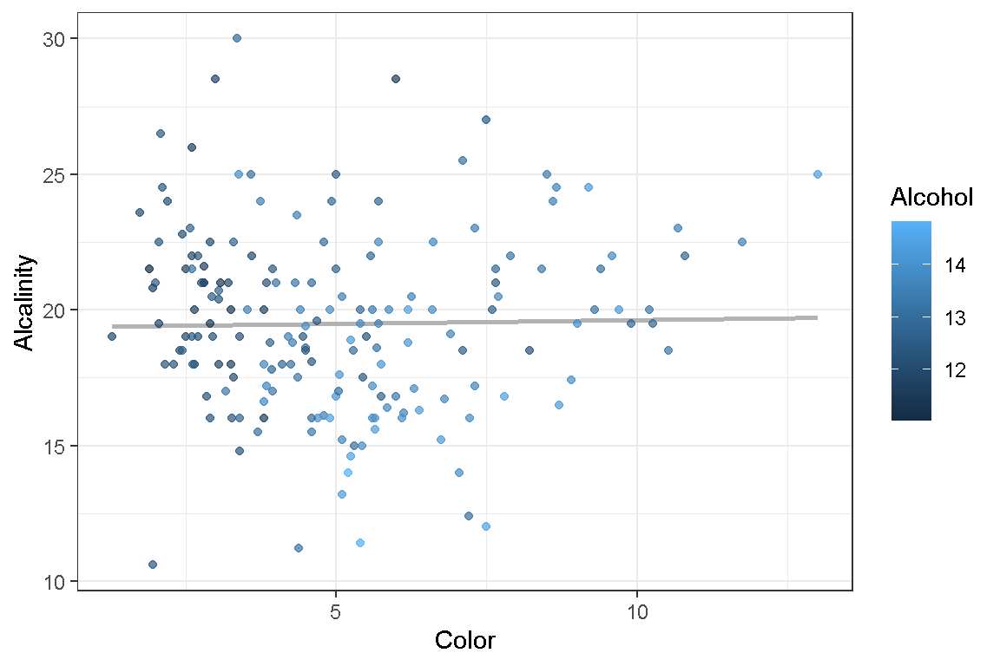
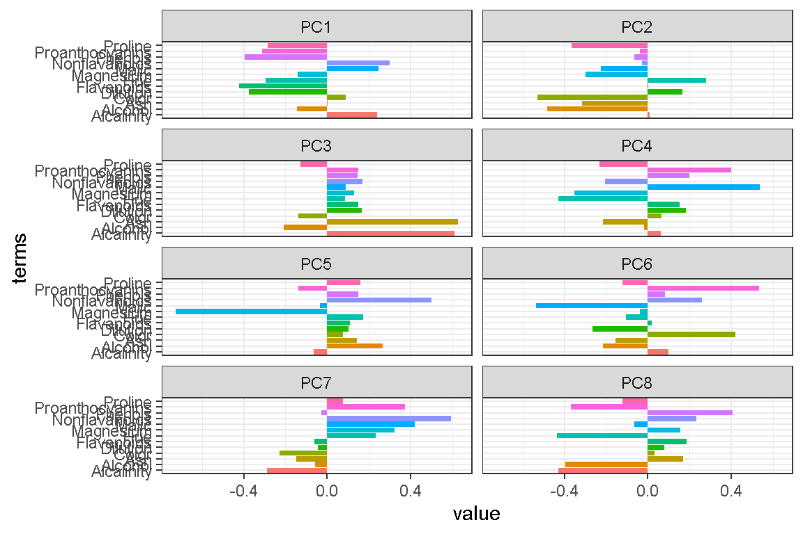
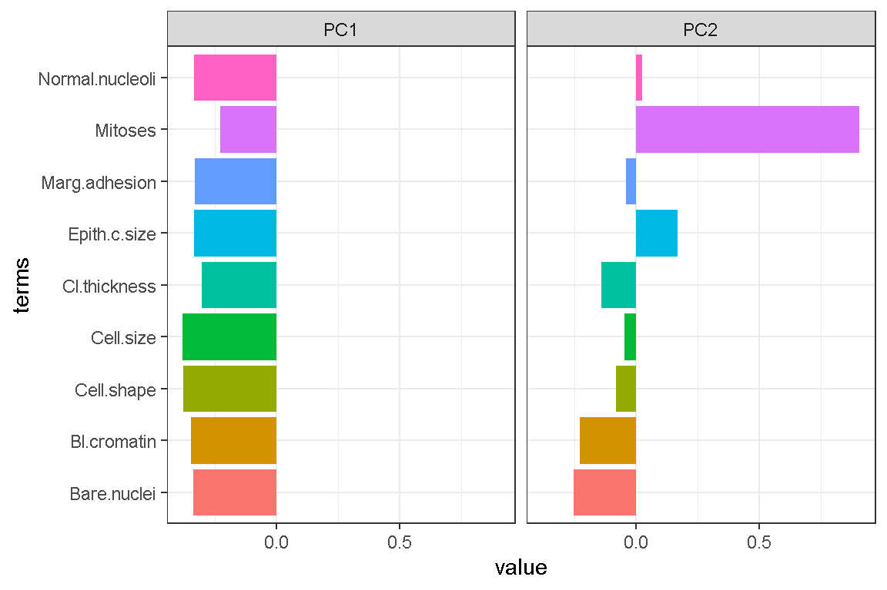
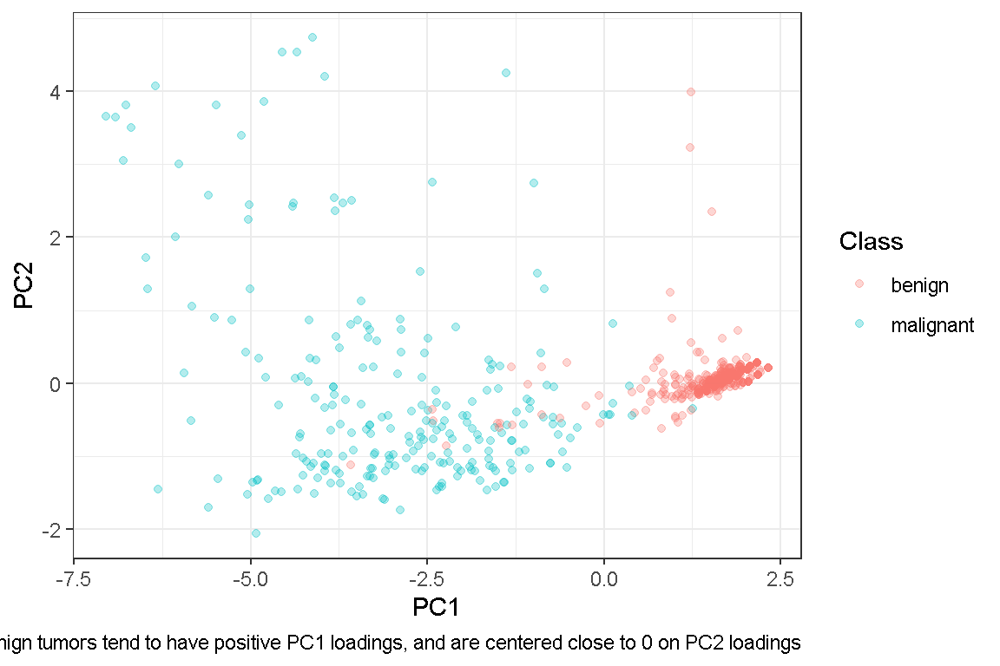
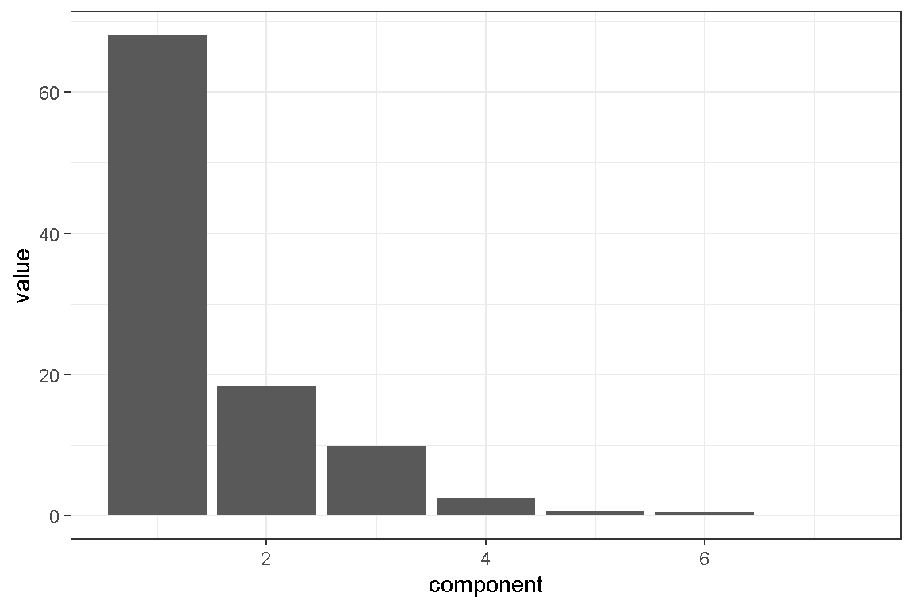
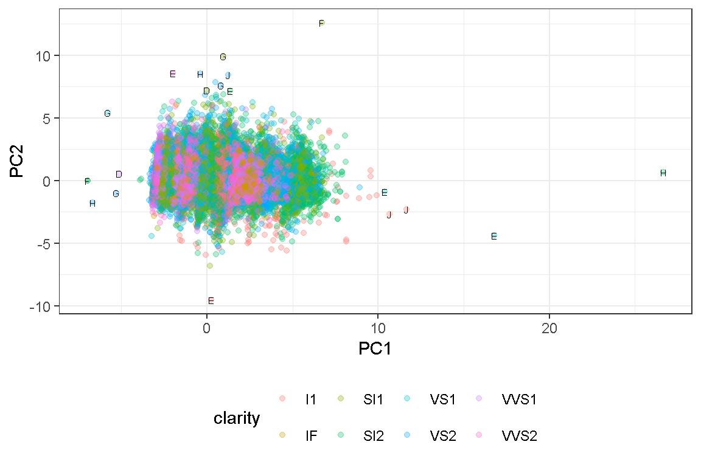
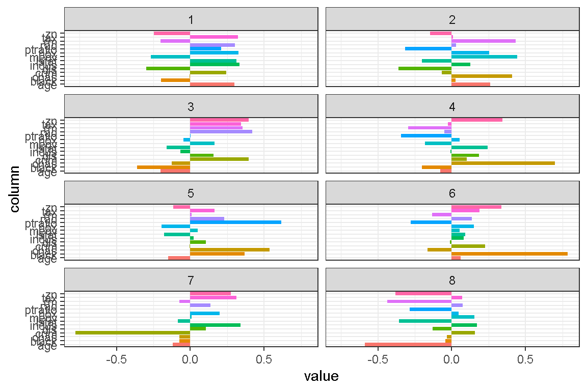
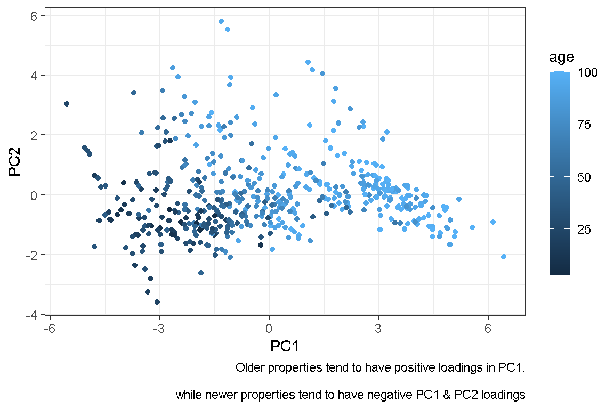

We ran out of time during class due to the immense amount of material that needed to be covered. Hence, these assessment questions became homework assignments. Within, you will find explorations of PCA using the tidymodel way, as well as using prcomp from Base R.
There are 4 questions to be answered. I didn’t list them here, but if you follow along, I’ve explored most concepts of PCA using the tidymodel way, as well as using prcomp from Base R.
Note that aesthetics were NOT a priority for me - hence most of the plots could definitely be improved upon.
Let’s begin by importing the necessary packages and data.
Load the data. We see that “Type” is probably an encoding for different types of wine with 3 levels. Change to a factor.
wine <- read_csv("wine.csv")
skim(wine)| Name | wine |
| Number of rows | 178 |
| Number of columns | 14 |
| _______________________ | |
| Column type frequency: | |
| numeric | 14 |
| ________________________ | |
| Group variables | None |
Variable type: numeric
| skim_variable | n_missing | complete_rate | mean | sd | p0 | p25 | p50 | p75 | p100 | hist |
|---|---|---|---|---|---|---|---|---|---|---|
| Type | 0 | 1 | 1.94 | 0.78 | 1.00 | 1.00 | 2.00 | 3.00 | 3.00 | ▆▁▇▁▆ |
| Alcohol | 0 | 1 | 13.00 | 0.81 | 11.03 | 12.36 | 13.05 | 13.68 | 14.83 | ▂▇▇▇▃ |
| Malic | 0 | 1 | 2.34 | 1.12 | 0.74 | 1.60 | 1.87 | 3.08 | 5.80 | ▇▅▂▂▁ |
| Ash | 0 | 1 | 2.37 | 0.27 | 1.36 | 2.21 | 2.36 | 2.56 | 3.23 | ▁▂▇▅▁ |
| Alcalinity | 0 | 1 | 19.49 | 3.34 | 10.60 | 17.20 | 19.50 | 21.50 | 30.00 | ▁▆▇▃▁ |
| Magnesium | 0 | 1 | 99.74 | 14.28 | 70.00 | 88.00 | 98.00 | 107.00 | 162.00 | ▅▇▃▁▁ |
| Phenols | 0 | 1 | 2.30 | 0.63 | 0.98 | 1.74 | 2.36 | 2.80 | 3.88 | ▅▇▇▇▁ |
| Flavanoids | 0 | 1 | 2.03 | 1.00 | 0.34 | 1.20 | 2.13 | 2.88 | 5.08 | ▆▆▇▂▁ |
| Nonflavanoids | 0 | 1 | 0.36 | 0.12 | 0.13 | 0.27 | 0.34 | 0.44 | 0.66 | ▃▇▅▃▂ |
| Proanthocyanins | 0 | 1 | 1.59 | 0.57 | 0.41 | 1.25 | 1.56 | 1.95 | 3.58 | ▃▇▆▂▁ |
| Color | 0 | 1 | 5.06 | 2.32 | 1.28 | 3.22 | 4.69 | 6.20 | 13.00 | ▆▇▃▂▁ |
| Hue | 0 | 1 | 0.96 | 0.23 | 0.48 | 0.78 | 0.96 | 1.12 | 1.71 | ▅▇▇▃▁ |
| Dilution | 0 | 1 | 2.61 | 0.71 | 1.27 | 1.94 | 2.78 | 3.17 | 4.00 | ▆▃▆▇▃ |
| Proline | 0 | 1 | 746.89 | 314.91 | 278.00 | 500.50 | 673.50 | 985.00 | 1680.00 | ▇▇▅▃▁ |
wine <-
wine %>%
mutate(Type = as.factor(Type))For the EDA portion, let’s do a histogram to see the distribution of wine by alcalinity. I will also do a scatter plot to explore the relationship between alcalinity and color.
wine %>%
ggplot(aes(x = Alcalinity)) +
geom_histogram()# probably no relationship
wine %>%
ggplot(aes(x = Color,
y = Alcalinity)
) +
geom_smooth(method = "lm",
formula = y~x,
color = "grey70",
se = F
) +
geom_point(aes(color = Alcohol),
alpha = 0.7) +
theme_bw()
Normalize the dataset and execute PCA using the tidymodels framework.
# tidy models way
rec_wine <-
recipe(formula = ~.,
data = wine) %>%
# change roles to "id", instead could use step_rm to completely remove
update_role(Type,
new_role = "id") %>%
step_zv(all_predictors()) %>%
step_normalize(all_predictors()) %>%
step_pca(all_predictors(), id="pca_wine", threshold = 0.9)
prep_wine <- # note that PCA is step 3
rec_wine %>%
prep(verbose = T)oper 1 step zv [training]
oper 2 step normalize [training]
oper 3 step pca [training]
The retained training set is ~ 0.01 Mb in memory.# A tibble: 52 × 4
terms value component id
<chr> <dbl> <int> <chr>
1 variance 4.71 1 pca_wine
2 variance 2.50 2 pca_wine
3 variance 1.45 3 pca_wine
4 variance 0.919 4 pca_wine
5 variance 0.853 5 pca_wine
6 variance 0.642 6 pca_wine
7 variance 0.551 7 pca_wine
8 variance 0.348 8 pca_wine
9 variance 0.289 9 pca_wine
10 variance 0.251 10 pca_wine
11 variance 0.226 11 pca_wine
12 variance 0.169 12 pca_wine
13 variance 0.103 13 pca_wine
14 cumulative variance 4.71 1 pca_wine
15 cumulative variance 7.20 2 pca_wine
16 cumulative variance 8.65 3 pca_wine
17 cumulative variance 9.57 4 pca_wine
18 cumulative variance 10.4 5 pca_wine
19 cumulative variance 11.1 6 pca_wine
20 cumulative variance 11.6 7 pca_wine
21 cumulative variance 12.0 8 pca_wine
22 cumulative variance 12.3 9 pca_wine
23 cumulative variance 12.5 10 pca_wine
24 cumulative variance 12.7 11 pca_wine
25 cumulative variance 12.9 12 pca_wine
26 cumulative variance 13 13 pca_wine
27 percent variance 36.2 1 pca_wine
28 percent variance 19.2 2 pca_wine
29 percent variance 11.1 3 pca_wine
30 percent variance 7.07 4 pca_wine
31 percent variance 6.56 5 pca_wine
32 percent variance 4.94 6 pca_wine
33 percent variance 4.24 7 pca_wine
34 percent variance 2.68 8 pca_wine
35 percent variance 2.22 9 pca_wine
36 percent variance 1.93 10 pca_wine
37 percent variance 1.74 11 pca_wine
38 percent variance 1.30 12 pca_wine
39 percent variance 0.795 13 pca_wine
40 cumulative percent variance 36.2 1 pca_wine
41 cumulative percent variance 55.4 2 pca_wine
42 cumulative percent variance 66.5 3 pca_wine
43 cumulative percent variance 73.6 4 pca_wine
44 cumulative percent variance 80.2 5 pca_wine
45 cumulative percent variance 85.1 6 pca_wine
46 cumulative percent variance 89.3 7 pca_wine
47 cumulative percent variance 92.0 8 pca_wine
48 cumulative percent variance 94.2 9 pca_wine
49 cumulative percent variance 96.2 10 pca_wine
50 cumulative percent variance 97.9 11 pca_wine
51 cumulative percent variance 99.2 12 pca_wine
52 cumulative percent variance 100 13 pca_wineFor the wine dataset, PC1 captures 36.2% of the variance and PC2 captures 19.2 percent of the variance in the dataset. Cumulative, that’s 55.4 percent of the dataset. It looks like we will need more PCs. To achieve 90% data “coverage”, we will need 8 principal components.
tidy_wine_pca_loadings <-
prep_wine %>%
tidy(id = "pca_wine")
# plot the loadings for first 8 PCs
tidy_wine_pca_loadings %>%
filter(component %in% c(paste0("PC", 1:8))) %>%
ggplot (aes(x = value,
y = terms,
fill = terms
)
) +
geom_col(show.legend = F) +
facet_wrap(.~ component,
ncol = 2) +
theme_bw()
Load the bc dataset and check for any missing values.
Exclude the categorical variable, normalize the remaining data, and run PCA using tidymodels::.
Interpret the loadings of the first two principal components. What do these loadings tell us about the data?
Visualize the PCA results, with points colored by Class. Can PCA help differentiate between benign and malignant samples based on the first two principal components?
Load the data.
bc <- read_csv("bc.csv")
skim(bc)| Name | bc |
| Number of rows | 699 |
| Number of columns | 11 |
| _______________________ | |
| Column type frequency: | |
| character | 1 |
| numeric | 10 |
| ________________________ | |
| Group variables | None |
Variable type: character
| skim_variable | n_missing | complete_rate | min | max | empty | n_unique | whitespace |
|---|---|---|---|---|---|---|---|
| Class | 0 | 1 | 6 | 9 | 0 | 2 | 0 |
Variable type: numeric
| skim_variable | n_missing | complete_rate | mean | sd | p0 | p25 | p50 | p75 | p100 | hist |
|---|---|---|---|---|---|---|---|---|---|---|
| Id | 0 | 1.00 | 1071704.10 | 617095.73 | 61634 | 870688.5 | 1171710 | 1238298 | 13454352 | ▇▁▁▁▁ |
| Cl.thickness | 0 | 1.00 | 4.42 | 2.82 | 1 | 2.0 | 4 | 6 | 10 | ▇▇▇▃▃ |
| Cell.size | 0 | 1.00 | 3.13 | 3.05 | 1 | 1.0 | 1 | 5 | 10 | ▇▂▁▁▂ |
| Cell.shape | 0 | 1.00 | 3.21 | 2.97 | 1 | 1.0 | 1 | 5 | 10 | ▇▂▁▁▁ |
| Marg.adhesion | 0 | 1.00 | 2.81 | 2.86 | 1 | 1.0 | 1 | 4 | 10 | ▇▂▁▁▁ |
| Epith.c.size | 0 | 1.00 | 3.22 | 2.21 | 1 | 2.0 | 2 | 4 | 10 | ▇▂▂▁▁ |
| Bare.nuclei | 16 | 0.98 | 3.54 | 3.64 | 1 | 1.0 | 1 | 6 | 10 | ▇▁▁▁▂ |
| Bl.cromatin | 0 | 1.00 | 3.44 | 2.44 | 1 | 2.0 | 3 | 5 | 10 | ▇▅▁▂▁ |
| Normal.nucleoli | 0 | 1.00 | 2.87 | 3.05 | 1 | 1.0 | 1 | 4 | 10 | ▇▁▁▁▁ |
| Mitoses | 0 | 1.00 | 1.59 | 1.72 | 1 | 1.0 | 1 | 1 | 10 | ▇▁▁▁▁ |
16 missing values in feature Bare.nucleoi. I will use step_impute_knn to impute the missing values.
rec_bc <-
recipe(formula = ~.,
data = bc) %>%
# change roles to "id", instead could use step_rm to completely remove
update_role(Class, Id,
new_role = "id") %>%
step_zv(all_predictors()) %>%
step_impute_knn(Bare.nuclei) %>%
step_normalize(all_predictors()) %>%
step_pca(all_predictors(), id="pca_bc", threshold = 0.9)
prep_bc <-
rec_bc %>%
prep(verbose = T)oper 1 step zv [training]
oper 2 step impute knn [training]
oper 3 step normalize [training]
oper 4 step pca [training]
The retained training set is ~ 0.04 Mb in memory.tidy_bc_pca_loadings <-
prep_bc %>%
tidy(id = "pca_bc")
# lets make a plot of PC1 and PC2
tidy_bc_pca_loadings %>%
filter(component %in% c(paste0("PC", 1:2))) %>%
ggplot (aes(x = value,
y = terms,
fill = terms
)
) +
geom_col(show.legend = F) +
facet_wrap(.~ component,
ncol = 2) +
theme_bw()
In PC1, all terms have negative loading values. In PC2, “Mitoses” is dominant in its effects. That’s interesting, lets examine a scatter plot. This is “extra credit”.
prep_bc %>%
juice() %>%
ggplot(aes(x = PC1,
y = PC2,
color = Class)) + # can change to cut, or color as well
geom_point(alpha = 0.3)+
labs(caption = "Benign tumors tend to have positive PC1 loadings, and are centered close to 0 on PC2 loadings")+
theme(legend.position = "bottom") +
theme_bw()
Load the diamonds dataset and check the summary statistics of each variable.
Select only the numeric variables, normalize the data, and then perform PCA using tidymodels::.
How do you interpret the number of principal components? Do you think two principal components are sufficient to capture the major patterns in this dataset?
Generate a scatter plot of the first two principal components. Can you identify any clusters or outliers in the data?
Import the data and conduct brief EDA.
diamonds <- read_csv("diamonds.csv")
# change character to factor
diamonds <-
diamonds %>%
mutate_if(is.character, as.factor)
# both summary and skim provide summary statistics
summary(diamonds) carat cut color clarity
Min. :0.2000 Fair : 1610 D: 6775 SI1 :13065
1st Qu.:0.4000 Good : 4906 E: 9797 VS2 :12258
Median :0.7000 Ideal :21551 F: 9542 SI2 : 9194
Mean :0.7979 Premium :13791 G:11292 VS1 : 8171
3rd Qu.:1.0400 Very Good:12082 H: 8304 VVS2 : 5066
Max. :5.0100 I: 5422 VVS1 : 3655
J: 2808 (Other): 2531
depth table price x
Min. :43.00 Min. :43.00 Min. : 326 Min. : 0.000
1st Qu.:61.00 1st Qu.:56.00 1st Qu.: 950 1st Qu.: 4.710
Median :61.80 Median :57.00 Median : 2401 Median : 5.700
Mean :61.75 Mean :57.46 Mean : 3933 Mean : 5.731
3rd Qu.:62.50 3rd Qu.:59.00 3rd Qu.: 5324 3rd Qu.: 6.540
Max. :79.00 Max. :95.00 Max. :18823 Max. :10.740
y z
Min. : 0.000 Min. : 0.000
1st Qu.: 4.720 1st Qu.: 2.910
Median : 5.710 Median : 3.530
Mean : 5.735 Mean : 3.539
3rd Qu.: 6.540 3rd Qu.: 4.040
Max. :58.900 Max. :31.800
skim(diamonds)| Name | diamonds |
| Number of rows | 53940 |
| Number of columns | 10 |
| _______________________ | |
| Column type frequency: | |
| factor | 3 |
| numeric | 7 |
| ________________________ | |
| Group variables | None |
Variable type: factor
| skim_variable | n_missing | complete_rate | ordered | n_unique | top_counts |
|---|---|---|---|---|---|
| cut | 0 | 1 | FALSE | 5 | Ide: 21551, Pre: 13791, Ver: 12082, Goo: 4906 |
| color | 0 | 1 | FALSE | 7 | G: 11292, E: 9797, F: 9542, H: 8304 |
| clarity | 0 | 1 | FALSE | 8 | SI1: 13065, VS2: 12258, SI2: 9194, VS1: 8171 |
Variable type: numeric
| skim_variable | n_missing | complete_rate | mean | sd | p0 | p25 | p50 | p75 | p100 | hist |
|---|---|---|---|---|---|---|---|---|---|---|
| carat | 0 | 1 | 0.80 | 0.47 | 0.2 | 0.40 | 0.70 | 1.04 | 5.01 | ▇▂▁▁▁ |
| depth | 0 | 1 | 61.75 | 1.43 | 43.0 | 61.00 | 61.80 | 62.50 | 79.00 | ▁▁▇▁▁ |
| table | 0 | 1 | 57.46 | 2.23 | 43.0 | 56.00 | 57.00 | 59.00 | 95.00 | ▁▇▁▁▁ |
| price | 0 | 1 | 3932.80 | 3989.44 | 326.0 | 950.00 | 2401.00 | 5324.25 | 18823.00 | ▇▂▁▁▁ |
| x | 0 | 1 | 5.73 | 1.12 | 0.0 | 4.71 | 5.70 | 6.54 | 10.74 | ▁▁▇▃▁ |
| y | 0 | 1 | 5.73 | 1.14 | 0.0 | 4.72 | 5.71 | 6.54 | 58.90 | ▇▁▁▁▁ |
| z | 0 | 1 | 3.54 | 0.71 | 0.0 | 2.91 | 3.53 | 4.04 | 31.80 | ▇▁▁▁▁ |
Perform PCA the tidymodel way. As we can see from the summary table, 2 PCs cover about 86.4% of the data, while 3 PCs cover about 96.3%. Hence, if we use 90% as the threshold, 3 PCs would be sufficient.
# tidy models way
rec_diamonds <-
recipe(formula = ~.,
data = diamonds) %>%
# change roles to "id", instead could use step_rm to completely remove
update_role(cut, color, clarity,
new_role = "id") %>%
step_zv(all_predictors()) %>%
step_normalize(all_predictors()) %>%
step_pca(all_predictors(), id="pca", threshold = 0.9)
prep_diamond <- # note that PCA is step 3
rec_diamonds %>%
prep(verbose = T)oper 1 step zv [training]
oper 2 step normalize [training]
oper 3 step pca [training]
The retained training set is ~ 1.86 Mb in memory.# to obtain loadings. Here you're telling tidy to tidy the step of recipe with id=pca
tidy_diamond_pca_loadings <-
prep_diamond %>%
tidy(id = "pca") %>%
pivot_wider(id_cols = c(terms, id),
names_from = component,
values_from = value)
# this also obtains loadings. Here you are tidy-ing the 3rd step of the recipe
prep_diamond %>% tidy(3)# A tibble: 49 × 4
terms value component id
<chr> <dbl> <chr> <chr>
1 carat 0.452 PC1 pca
2 depth -0.000916 PC1 pca
3 table 0.0995 PC1 pca
4 price 0.426 PC1 pca
5 x 0.453 PC1 pca
6 y 0.447 PC1 pca
7 z 0.446 PC1 pca
8 carat -0.0347 PC2 pca
9 depth -0.731 PC2 pca
10 table 0.675 PC2 pca
# ℹ 39 more rows# this is how you "extract" standard deviation, variance, and cumulative from a prep recipe using the tidymodels way
# info is stored in a list, so you need to go inside and "dig" for it
prep_diamond$steps[[3]]$res %>% summary()Importance of components:
PC1 PC2 PC3 PC4 PC5 PC6
Standard deviation 2.1826 1.1340 0.83115 0.41684 0.20077 0.18151
Proportion of Variance 0.6806 0.1837 0.09869 0.02482 0.00576 0.00471
Cumulative Proportion 0.6806 0.8642 0.96294 0.98776 0.99352 0.99823
PC7
Standard deviation 0.11135
Proportion of Variance 0.00177
Cumulative Proportion 1.00000#this will get you similar information, as a tibble, so you can make a screeplot
diamond_variance <-
prep_diamond %>%
tidy(id = "pca", type = "variance") %>%
print(n = nrow(.))# A tibble: 28 × 4
terms value component id
<chr> <dbl> <int> <chr>
1 variance 4.76 1 pca
2 variance 1.29 2 pca
3 variance 0.691 3 pca
4 variance 0.174 4 pca
5 variance 0.0403 5 pca
6 variance 0.0329 6 pca
7 variance 0.0124 7 pca
8 cumulative variance 4.76 1 pca
9 cumulative variance 6.05 2 pca
10 cumulative variance 6.74 3 pca
11 cumulative variance 6.91 4 pca
12 cumulative variance 6.95 5 pca
13 cumulative variance 6.99 6 pca
14 cumulative variance 7.00 7 pca
15 percent variance 68.1 1 pca
16 percent variance 18.4 2 pca
17 percent variance 9.87 3 pca
18 percent variance 2.48 4 pca
19 percent variance 0.576 5 pca
20 percent variance 0.471 6 pca
21 percent variance 0.177 7 pca
22 cumulative percent variance 68.1 1 pca
23 cumulative percent variance 86.4 2 pca
24 cumulative percent variance 96.3 3 pca
25 cumulative percent variance 98.8 4 pca
26 cumulative percent variance 99.4 5 pca
27 cumulative percent variance 99.8 6 pca
28 cumulative percent variance 100 7 pca ## basic scree plot
diamond_variance %>%
filter(terms == "percent variance") %>%
ggplot(aes(x = component,
y = value)
) +
geom_col() +
theme_bw()
Scatter plot of PC1 and PC2. We can see that outliers exist.
# when you juice a prep recipe, you get the individual data and their values on the principal components. You can use this to make a scatter plot
juice_diamonds <-
prep_diamond %>%
juice()
# this plot shows individual diamonds plotted on the new scale PC1, PC2
juice_diamonds %>%
ggplot(aes(x = PC1,
y = PC2,
color = clarity)) + # can change to cut, or color as well
geom_point(alpha = 0.3)+
# here we use geom text to label potential outliers by color
geom_text(data = juice_diamonds %>%
filter(PC1 > 10 | PC1 < -5 | PC2 > 7 | PC2 < -7),
aes(label = color),
check_overlap = T,
color = "black",
size = 2) +
theme_bw()+
theme(legend.position = "bottom") 
Load the housing dataset and investigate its correlations.
housing <- read_csv("housing.csv")
skim(housing)| Name | housing |
| Number of rows | 506 |
| Number of columns | 14 |
| _______________________ | |
| Column type frequency: | |
| numeric | 14 |
| ________________________ | |
| Group variables | None |
Variable type: numeric
| skim_variable | n_missing | complete_rate | mean | sd | p0 | p25 | p50 | p75 | p100 | hist |
|---|---|---|---|---|---|---|---|---|---|---|
| crim | 0 | 1 | 3.61 | 8.60 | 0.01 | 0.08 | 0.26 | 3.68 | 88.98 | ▇▁▁▁▁ |
| zn | 0 | 1 | 11.36 | 23.32 | 0.00 | 0.00 | 0.00 | 12.50 | 100.00 | ▇▁▁▁▁ |
| indus | 0 | 1 | 11.14 | 6.86 | 0.46 | 5.19 | 9.69 | 18.10 | 27.74 | ▇▆▁▇▁ |
| chas | 0 | 1 | 0.07 | 0.25 | 0.00 | 0.00 | 0.00 | 0.00 | 1.00 | ▇▁▁▁▁ |
| nox | 0 | 1 | 0.55 | 0.12 | 0.38 | 0.45 | 0.54 | 0.62 | 0.87 | ▇▇▆▅▁ |
| rm | 0 | 1 | 6.28 | 0.70 | 3.56 | 5.89 | 6.21 | 6.62 | 8.78 | ▁▂▇▂▁ |
| age | 0 | 1 | 68.57 | 28.15 | 2.90 | 45.02 | 77.50 | 94.07 | 100.00 | ▂▂▂▃▇ |
| dis | 0 | 1 | 3.80 | 2.11 | 1.13 | 2.10 | 3.21 | 5.19 | 12.13 | ▇▅▂▁▁ |
| rad | 0 | 1 | 9.55 | 8.71 | 1.00 | 4.00 | 5.00 | 24.00 | 24.00 | ▇▂▁▁▃ |
| tax | 0 | 1 | 408.24 | 168.54 | 187.00 | 279.00 | 330.00 | 666.00 | 711.00 | ▇▇▃▁▇ |
| ptratio | 0 | 1 | 18.46 | 2.16 | 12.60 | 17.40 | 19.05 | 20.20 | 22.00 | ▁▃▅▅▇ |
| black | 0 | 1 | 356.67 | 91.29 | 0.32 | 375.38 | 391.44 | 396.22 | 396.90 | ▁▁▁▁▇ |
| lstat | 0 | 1 | 12.65 | 7.14 | 1.73 | 6.95 | 11.36 | 16.96 | 37.97 | ▇▇▅▂▁ |
| medv | 0 | 1 | 22.53 | 9.20 | 5.00 | 17.02 | 21.20 | 25.00 | 50.00 | ▂▇▅▁▁ |
## chas appears to be a binary feature. Will exclude in correlation analysis
housing %>%
dplyr::select(-chas) %>%
as.matrix(.) %>%
Hmisc::rcorr(.) %>%
tidy() %>%
mutate(absCorr = abs(estimate)) %>%
dplyr::select(column1, column2, absCorr) %>%
datatable() %>%
formatRound(columns = "absCorr",
digits = 3)Since I’ve already done 3 examples using tidymodels method, for Question 4, I will practice using prcomp for the PCA explorations.
crim zn indus chas nox rm age dis
0 0 0 0 0 0 0 0
rad tax ptratio black lstat medv
0 0 0 0 0 0 housing_PCA <-
housing %>%
prcomp(scale = T)
# we can use tidy(matrix = "xxxx") to get some useful info
# self explanatory, we obtain loadings
housing_PCA %>%
tidy(matrix = "loadings")# A tibble: 196 × 3
column PC value
<chr> <dbl> <dbl>
1 crim 1 0.242
2 crim 2 -0.0659
3 crim 3 0.395
4 crim 4 0.100
5 crim 5 -0.00496
6 crim 6 0.225
7 crim 7 -0.777
8 crim 8 0.157
9 crim 9 -0.254
10 crim 10 -0.0714
# ℹ 186 more rows# self explanatory again, except you need to square the std.dev to get eigenvalues
scale <- 10
housing_PCA %>%
tidy(matrix = "eigenvalues") %>%
mutate(eigenvalues = std.dev^2) %>%
#we can continue to do a scree plot. Lets put in some effort and do a SUPER nice one
slice_max(order_by = percent, n = 10) %>%
ggplot(aes(x = PC)
) +
geom_point(aes(y = eigenvalues,
size = eigenvalues),
color = "dodgerblue",
show.legend = F
) +
geom_line(aes(y = eigenvalues),
color = "tomato3",
linewidth = 1)+
geom_col(aes(y = percent*scale)
) +
scale_y_continuous(sec.axis = sec_axis(~./scale, name="percent")) +
theme_bw()+
labs(title = "A nicer scree plot - Housing PCA") theme(legend.position = "none") List of 1
$ legend.position: chr "none"
- attr(*, "class")= chr [1:2] "theme" "gg"
- attr(*, "complete")= logi FALSE
- attr(*, "validate")= logi TRUE# Same as doing this
housing_PCA %>%
tidy(matrix = "scores")# A tibble: 7,084 × 3
row PC value
<int> <dbl> <dbl>
1 1 1 -2.09
2 1 2 0.492
3 1 3 -0.336
4 1 4 -0.0281
5 1 5 -1.01
6 1 6 0.262
7 1 7 -0.328
8 1 8 0.160
9 1 9 0.471
10 1 10 -0.206
# ℹ 7,074 more rowsIn order to achieve a threshold of 90%, I will need 8 principal components. PC1 explains 46.8 percent of the variance, while PC2 explains 11.8 percent. Cumulatively, PC1 and PC2 explain about 58.5% of the variance.
Let’s visualize the PCA results.
housing_PCA %>%
tidy(matrix = "loadings") %>%
filter(PC %in% c(1:8)) %>%
ggplot (aes(x = value,
y = column,
fill = column
)
) +
geom_col(show.legend = F) +
facet_wrap(.~ PC,
ncol = 2) +
theme_bw()
Not sure how much I can see from the above plot :( Let’s try something else
housing_PCA %>%
tidy(matrix = "scores") %>%
filter(PC <= 2) %>%
pivot_wider(id_cols = "row",
names_from = PC,
names_prefix = "PC",
values_from = value) %>%
cbind(housing) %>%
ggplot(aes(x = PC1,
y = PC2,
color = age)) +
geom_point() +
guides(color = guide_colourbar(barwidth = 1,
barheight = 10))+
labs(caption = "Older properties tend to have positive loadings in PC1,\n
while newer properties tend to have negative PC1 & PC2 loadings")+
theme_bw()
save.image("group_assignment3.RData")